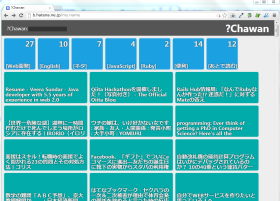

Chawan: はてなブックマーククライアント for Firefox and Chrome
{kind=link}
Chawanは，以下の様な特徴を持つはてなブックマーククライアントです．
- シンプルかつ洗練されたデザイン
- 独自のルール記法により，階層付けたブックマークの管理が可能
- FirefoxグリースモンキーまたはGoogle Chrome拡張として動作(ブラウザ上で使える)
- はてなブックマーク本家より軽量に動作(場合による？)
- インクリメンタルサーチ機能によって，キーボードだけでブックマーク先へ移動可能
- はてなブックマーク本家と共存可能(別々のURL)
インストール
- Chawan 最新安定版をクリックしてインストール
- (Google Chromeユーザのみ)
chrome://chrome/extensions/へアクセスし，ダウンロードしたスクリプトファイルをドラッグ＆ドロップ - Chawan 設定ページへアクセスし，設定を行う
- http://b.hatena.ne.jp/my.nameがChawanのトップページとして動作します
ルールについて
通常のはてなブックマークでは，タグを用いてブックマークの管理を行いますが，Chawanでは，それらタグに対してフォルダ階層を指定し，フォルダによってブックマークを管理できます．
あるタグに対してフォルダを定義するには，以下のようにタグ名を[]で囲みます． 下の様に記述した場合， JavaScript タグのついたブックマークが JavaScript フォルダの中に配置されます．
[JavaScript]
OSなどにおけるフォルダシステムと異なり，ひとつのブックマークは複数のフォルダの中に存在することが出来ます．例えば JavaScript , CSS というようなタグの付けられたブックマークが存在する時に，以下のように JavaScript フォルダ， CSS フォルダを定義すると，そのブックマークは JavaScript フォルダ直下， CSS フォルダ直下の両方からアクセス可能です．
[JavaScript]
[CSS]
また， JavaScript タグのついたエントリの中でも，特に jQuery タグがついたブックマークをサブフォルダとして管理したい，というような場合は，以下の様に，2つのスペースによるインデントで，サブフォルダを定義可能です．
[JavaScript]
[jQuery]
JavaScript フォルダの中に jQuery フォルダが作られ， JavaScript , jQuery 両方のタグを持つブックマークが， JavaScript/jQuery フォルダの中に格納されます．この際，それらのブックマークは JavaScript フォルダの直下からは消えることに注意してください．